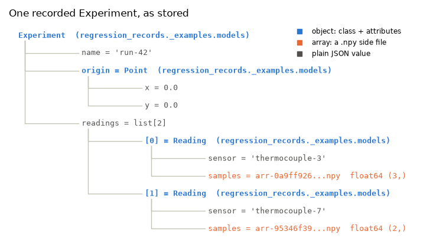

Note
Go to the end to download the full example code.
to_json_tree, from_json_tree : custom classes stored by their attributes¶
to_json_tree() and from_json_tree() are the store/load pair the decorators are built
on, and they are usable directly - the successor to the old json_store /
load_json_store.
The headline: a class needs no registration and no serializer. Any instance is
recorded as its class’s import path plus its attributes - its __dict__ and every slot
set in its class hierarchy - each converted by the same rules, recursively. Loading
imports the class, allocates an instance with object.__new__ and sets those
attributes back. Methods are never stored: they come from the code as it is when the
record is loaded, which is what replaying against new code means.
Serializers exist only for leaf values - arrays, frames, datetimes, and C types with no attributes to record (default_registry : adding a serializer for a leaf type).
Setup: where records go¶
The code under test reads its store from the REGRESSION_RECORDS_STORE environment
variable when it is imported, so the variable is set first
(record_func : recording a first call says why).
import os
import tempfile
from pathlib import Path
# In a project: REGRESSION_RECORDS_STORE=tests/regression_data in a .env file, loaded
# with python-dotenv's load_dotenv(). Here: a fresh temporary directory, empty each run.
STORE = Path(tempfile.mkdtemp(prefix="regression-records-"))
os.environ["REGRESSION_RECORDS_STORE"] = str(STORE)
print("store:", STORE)
store: /tmp/regression-records-pzqwnkrh
Setup: the code under test¶
A recorded object is stored with its class’s module and qualified name, and loading it
re-imports the class by that name - so the classes have to live in an importable
module (rule 1 below shows what happens otherwise). In your project that is your own
package; here the page imports two modules from regression_records._examples -
support code that ships with the package so that a page can import real code rather
than define it in a cell (record_func : recording a first call
says more): models with the sample classes, and experiments with a recorded
function that takes and returns them. Each is printed where the page first uses it.
Between them the classes cover the shapes a class can take: Point has plain
attributes, Reading and Experiment nest with arrays inside, Quote is a
named tuple, Vec3 has __slots__ and no __dict__, and Calibration is a
frozen, slotted dataclass holding a read-only mapping. LiveReading holds an open
file, which is not data.
import inspect
import json
import numpy as np
from regression_records._examples import experiments
from regression_records._examples.models import (
Calibration,
Experiment,
Point,
Quote,
Reading,
Vec3,
)
from regression_records.serialization import (
DeserializationContext,
SerializationContext,
default_registry,
from_json_tree,
to_json_tree,
)
The two contexts¶
A SerializationContext says where side files go and how they should be referenced; a
DeserializationContext says where to resolve those references from. Here the JSON sits
at the root and its arrays go in data/ beside it, so the reference data/arr-....npy
resolves from the JSON’s own directory - which is what lets the whole directory be moved
or copied as a unit.
ROOT = Path(tempfile.mkdtemp(prefix="trees-"))
print("trees:", ROOT)
writing = SerializationContext(
data_dir=ROOT / "data",
registry=default_registry,
ref_prefix="data/",
)
reading = DeserializationContext(base_dir=ROOT, registry=default_registry)
trees: /tmp/trees-68xv358l
A plain class¶
Point has two attributes and nothing else. Its tree is the class’s import path plus
those attributes.
print(inspect.getsource(Point))
class Point:
"""Plain attributes. Recorded straight out of ``__dict__``."""
def __init__(self, x: float, y: float):
self.x = x
self.y = y
def __eq__(self, other):
return isinstance(other, Point) and (self.x, self.y) == (other.x, other.y)
def __repr__(self):
return f"Point(x={self.x!r}, y={self.y!r})"
point_tree = to_json_tree(Point(1.0, 2.5), writing)
print(json.dumps(point_tree, indent=2))
assert point_tree["class"] == {"module": Point.__module__, "qualname": "Point"}
{
"__type__": "object",
"class": {
"module": "regression_records._examples.models",
"qualname": "Point"
},
"attrs": {
"x": 1.0,
"y": 2.5
}
}
Slots, frozen dataclasses and named tuples¶
The shape of the class does not matter. Vec3 declares __slots__ and has no
__dict__; its slots are its attributes. Calibration is a
@dataclass(frozen=True, slots=True) holding a read-only MappingProxyType - the
attributes are set back past the frozen __setattr__, and the view comes back as a
view. A named tuple is stored with its fields by name.
for cls in (Vec3, Calibration, Quote):
print(inspect.getsource(cls))
class Vec3:
"""``__slots__``, so no ``__dict__``: each slot is recorded as an attribute."""
__slots__ = ("x", "y", "z")
def __init__(self, x: float, y: float, z: float):
self.x = x
self.y = y
self.z = z
def __repr__(self):
return f"Vec3({self.x!r}, {self.y!r}, {self.z!r})"
@dataclass(frozen=True, slots=True)
class Calibration:
"""Frozen and slotted, with a read-only mapping of per-sensor offsets."""
instrument: str
offsets: Mapping[str, float]
def __post_init__(self):
object.__setattr__(self, "offsets", MappingProxyType(dict(self.offsets)))
class Quote(NamedTuple):
"""A named tuple. Recorded with its class and its fields by name."""
bid: float
ask: float
for value in (
Vec3(1.0, 2.0, 3.0),
Calibration("rig-2", {"thermocouple-3": 0.05}),
Quote(bid=99.5, ask=100.5),
):
tree = to_json_tree(value, writing)
loaded = from_json_tree(tree, reading)
print(json.dumps(tree["attrs"]))
print(" ->", loaded)
assert type(loaded) is type(value)
{"x": 1.0, "y": 2.0, "z": 3.0}
-> Vec3(1.0, 2.0, 3.0)
{"instrument": "rig-2", "offsets": {"__type__": "mappingproxy", "mapping": {"thermocouple-3": 0.05}}}
-> Calibration(instrument='rig-2', offsets=mappingproxy({'thermocouple-3': 0.05}))
{"bid": 99.5, "ask": 100.5}
-> Quote(bid=99.5, ask=100.5)
Nesting¶
Serialization recurses, so objects inside objects inside lists all work. This is one
Experiment holding a Point and two Reading objects, each with an array.
print(inspect.getsource(Reading))
print(inspect.getsource(Experiment))
class Reading:
"""A named series of samples."""
def __init__(self, sensor: str, samples: np.ndarray):
self.sensor = sensor
self.samples = samples
def __repr__(self):
return f"Reading(sensor={self.sensor!r}, samples={self.samples!r})"
class Experiment:
"""Nests a ``Point`` and ``Reading`` objects - recorded recursively."""
def __init__(self, name: str, origin: Point, readings: list[Reading]):
self.name = name
self.origin = origin
self.readings = readings
def __repr__(self):
return (
f"Experiment(name={self.name!r}, origin={self.origin!r}, "
f"readings={self.readings!r})"
)
experiment = Experiment(
name="run-42",
origin=Point(0.0, 0.0),
readings=[
Reading("thermocouple-3", np.array([20.1, 20.4, 20.2])),
Reading("thermocouple-7", np.array([19.8, 19.9])),
],
)
tree = to_json_tree(experiment, writing)
(ROOT / "experiment.json").write_text(json.dumps(tree, indent=2))
print((ROOT / "experiment.json").read_text()[:900], "...")
{
"__type__": "object",
"class": {
"module": "regression_records._examples.models",
"qualname": "Experiment"
},
"attrs": {
"name": "run-42",
"origin": {
"__type__": "object",
"class": {
"module": "regression_records._examples.models",
"qualname": "Point"
},
"attrs": {
"x": 0.0,
"y": 0.0
}
},
"readings": [
{
"__type__": "object",
"class": {
"module": "regression_records._examples.models",
"qualname": "Reading"
},
"attrs": {
"sensor": "thermocouple-3",
"samples": {
"__type__": "numpy.ndarray",
"path": "data/arr-0a9ff926148dbb050fa79c934d9c6f64.npy",
"shape": [
3
],
"dtype": "float64"
}
}
},
{
"__type__": "objec ...
The arrays became references to .npy files rather than lists of numbers: full
precision, full dtype, and content-addressed, so two equal arrays anywhere in the tree
share one file. Drawn as a tree, the record is the class at the root, its attributes
as branches, and a side file at each array:
import matplotlib.pyplot as plt
KIND_COLORS = {"object": "#2a78d6", "array": "#eb6834", "value": "#52514e"}
def layout(node, key="", depth=0, parent=None, nodes=None):
"""Flatten a stored tree into nodes: ``(depth, row, label, kind, parent row)``."""
nodes = [] if nodes is None else nodes
row = len(nodes)
if isinstance(node, dict) and node.get("__type__") == "object":
cls = node["class"]
label, kind = f"{key}{cls['qualname']} ({cls['module']})", "object"
children = list(node["attrs"].items())
elif isinstance(node, dict) and node.get("__type__") == "numpy.ndarray":
name = Path(node["path"]).name
label = f"{key}{name[:12]}...npy {node['dtype']} {tuple(node['shape'])}"
kind, children = "array", []
elif isinstance(node, list):
label, kind = f"{key}list[{len(node)}]", "value"
children = [(f"[{i}]", child) for i, child in enumerate(node)]
else:
label, kind, children = f"{key}{node!r}", "value", []
nodes.append((depth, row, label, kind, parent))
for name, child in children:
layout(child, f"{name} = ", depth + 1, row, nodes)
return nodes
nodes = layout(tree)
assert sum(kind == "array" for *_, kind, _ in nodes) == 2
assert sum(kind == "object" for *_, kind, _ in nodes) == 4
fig, ax = plt.subplots(figsize=(7.5, 4.2))
depth_of = {row: depth for depth, row, *_ in nodes}
for depth, row, label, kind, parent in nodes:
if parent is not None:
ax.plot(
[depth_of[parent] + 0.15, depth_of[parent] + 0.15, depth],
[parent + 0.3, row, row],
color="#c3c2b7",
lw=1,
)
ax.text(
depth + 0.05,
row,
label,
va="center",
fontsize=9,
family="monospace",
color=KIND_COLORS[kind],
fontweight="bold" if kind == "object" else "normal",
)
LEGEND = {
"object": "object: class + attributes",
"array": "array: a .npy side file",
"value": "plain JSON value",
}
for kind, color in KIND_COLORS.items():
ax.plot([], [], "s", color=color, label=LEGEND[kind])
ax.set_xlim(-0.1, 6.2)
ax.set_ylim(len(nodes) - 0.4, -0.8)
ax.axis("off")
ax.legend(loc="upper right", fontsize=8.5)
ax.set_title("One recorded Experiment, as stored", loc="left")
fig.tight_layout()

Load it back¶
Through a real file, so nothing survives in memory between the two halves.
loaded = from_json_tree(json.loads((ROOT / "experiment.json").read_text()), reading)
print(loaded)
assert type(loaded) is Experiment
assert type(loaded.origin) is Point and type(loaded.readings[0]) is Reading
assert loaded.origin == experiment.origin, "the nested value did not round-trip"
np.testing.assert_array_equal(loaded.readings[0].samples, [20.1, 20.4, 20.2])
assert loaded.readings[0].samples.dtype == np.float64
Experiment(name='run-42', origin=Point(x=0.0, y=0.0), readings=[Reading(sensor='thermocouple-3', samples=array([20.1, 20.4, 20.2])), Reading(sensor='thermocouple-7', samples=array([19.8, 19.9]))])
What actually happens on load¶
The class is re-imported from the module / qualname in the record, allocated with
object.__new__(cls), and each recorded attribute is set on it - a slot through its
descriptor, anything else in __dict__.
Nothing else of the class’s runs. __init__ and a dataclass’s __post_init__ are
not called, which is what makes a record loadable when a constructor needs a database, a
file, or an argument nobody kept; it also means an invariant only they establish is not
re-established or re-checked. __getstate__ / __setstate__ are not used either:
an object is recorded as its attributes, whatever its pickling hooks say.
The flip side is that a record names attributes, private ones included. Rename an attribute, and records of the class written before the rename no longer fit it; a removed slot or an added dataclass field is reported as such when the record is loaded, and the record has to be re-recorded.
The two rules¶
1. The class must be importable by name. It is stored as its module and qualified
name, so loading a record re-imports it. A class defined in __main__ - a script, or a
notebook cell, like this page - cannot be re-imported from a fresh process, and is
refused at store time rather than producing a record nobody can read:
from regression_records import SerializationError
class DefinedRightHere:
def __init__(self):
self.x = 1
try:
to_json_tree(DefinedRightHere(), writing)
except SerializationError as e:
print(f"SerializationError: {e}")
else:
raise AssertionError("a class in __main__ is refused")
SerializationError: cannot serialize instances of class 'DefinedRightHere' defined in '__main__' - it cannot be re-imported by name from a fresh process later. Move the class to the top level of a regular importable module.
This is why this page’s classes live in models, an importable module, rather than
being defined in a cell. Move a class into any importable module and it records fine.
2. Every attribute must be data. An attribute is recorded by the same rules as any
other value, so one that is not data - an open file, a lock, a function, an object
from a compiled extension - refuses the whole object. It is never skipped: a record
that silently lost an attribute would replay as a pass. LiveReading holds an open
file:
from regression_records._examples.models import LiveReading
print(inspect.getsource(LiveReading))
class LiveReading(Reading):
"""A reading that also holds a live file handle, which has no place in a record."""
def __init__(self, sensor: str, samples: np.ndarray):
super().__init__(sensor, samples)
self.handle = open(os.devnull) # noqa: SIM115 - left open: it is the point
try:
to_json_tree(LiveReading("thermocouple-3", np.array([20.1])), writing)
except SerializationError as e:
print(f"SerializationError: {e}")
else:
raise AssertionError("an open file is not data")
SerializationError: cannot record a value of type '_io.TextIOWrapper': it is not a supported leaf type, and it cannot be rebuilt from its attributes (functions, classes, modules, and C types such as locks, file handles or compiled-extension objects). Record the data it holds instead, or register a leaf Serializer for the type.
Record the data such an object holds instead - here, a plain Reading. For a method
whose receiver holds one, record_method(exclude_attrs=...) leaves it out of the
recorded state (record_method : recording and replaying methods).
The same thing, through a decorator¶
Everything above is what happens inside record_func and record_method. Custom
objects work as arguments, as return values, and as recorded method state, with no
configuration at all. experiments records one function on them:
from regression_records import enable
print(inspect.getsource(experiments))
"""A function on custom classes, for the gallery page ``09_custom_classes``."""
from __future__ import annotations
import os
from regression_records import record_func
from .models import Experiment, Point
# Where records go is configuration, set by whoever runs this code; never set here.
STORE = os.environ["REGRESSION_RECORDS_STORE"]
@record_func(STORE)
def recentre(experiment: Experiment, origin: Point) -> Experiment:
"""Return a copy of ``experiment`` moved to ``origin``."""
return Experiment(name=experiment.name, origin=origin, readings=experiment.readings)
# Recording is off unless switched on; this page switches it on from here to the end.
enable()
experiments.recentre(experiment, Point(5.0, 5.0))
record_text = next(STORE.rglob("rec-*.json")).read_text()
print(json.dumps({"output": json.loads(record_text)["output"]}, indent=2))
references = record_text.count(".npy")
on_disk = len(list(STORE.rglob("*.npy")))
print("\n.npy references in the record:", references)
print(".npy files on disk: ", on_disk)
assert (references, on_disk) == (4, 2)
{
"output": {
"__type__": "object",
"attrs": {
"name": "run-42",
"origin": {
"__type__": "object",
"attrs": {
"x": 5.0,
"y": 5.0
},
"class": {
"module": "regression_records._examples.models",
"qualname": "Point"
}
},
"readings": [
{
"__type__": "object",
"attrs": {
"samples": {
"__type__": "numpy.ndarray",
"dtype": "float64",
"path": "../data/arr-0a9ff926148dbb050fa79c934d9c6f64.npy",
"shape": [
3
]
},
"sensor": "thermocouple-3"
},
"class": {
"module": "regression_records._examples.models",
"qualname": "Reading"
}
},
{
"__type__": "object",
"attrs": {
"samples": {
"__type__": "numpy.ndarray",
"dtype": "float64",
"path": "../data/arr-95346f39966313e03976db6b4d9ab2d5.npy",
"shape": [
2
]
},
"sensor": "thermocouple-7"
},
"class": {
"module": "regression_records._examples.models",
"qualname": "Reading"
}
}
]
},
"class": {
"module": "regression_records._examples.models",
"qualname": "Experiment"
}
}
}
.npy references in the record: 4
.npy files on disk: 2
The arguments are stored the same way (the record’s invocation.args holds the same
class-plus-attributes trees), and the arrays inside them landed in the store’s shared
data/ directory - once each, however many records or fields reference them.
Comparison follows the same rule: an object is compared attribute by attribute, so a
diff points at $.output.origin.y rather than telling you two Experiment objects
are unequal. Objects are compared by their attributes, not by __eq__, so a class with
no __eq__ still diffs usefully - and one whose __eq__ is loose still gets checked
strictly. A named tuple’s diff names the field: $.output.ask, not $.output[1].
from regression_records import compare
moved = compare(
Experiment("run-42", Point(0.0, 0.0), []),
Experiment("run-42", Point(0.0, 0.5), []),
root="$.output",
)
print(moved.summary())
quoted = compare(Quote(99.5, 100.5), Quote(99.5, 101.0), root="$.output")
print(quoted.summary())
assert [d.path for d in moved.diffs] == ["$.output.origin.y"]
assert [d.path for d in quoted.diffs] == ["$.output.ask"]
comparison failed with 1 diff(s):
at '$.output.origin.y' (value_mismatch): 0.5 differs from expected 0.0 beyond tolerance
comparison failed with 1 diff(s):
at '$.output.ask' (value_mismatch): 101.0 differs from expected 100.5 beyond tolerance
Next: default_registry : adding a serializer for a leaf type - a serializer for a leaf value with no attributes to record.
Total running time of the script: (0 minutes 0.161 seconds)